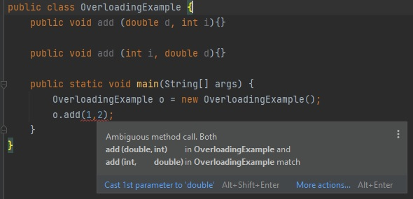
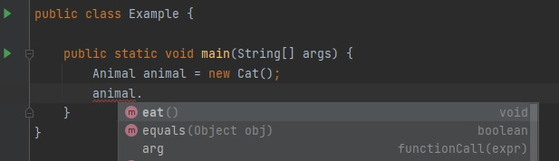

This is data hiding and protecting from outside. It is implementing by using access modifiers.
There are four access modifiers:
A top-level class can use public or default access modifiers only. At the member level, we can use all four.
General approach with variables is:
public class Cat {
private int age = 0;
public void setAge(int age) {
this.age=age;
}
public int getAge() {
return this.age;
}
}
NOTE: it is possible to add constraints in setter, for example I want nobody set an age <= 0
public void setAge(int age) {
if (age > 0) {
this.age=age;
} else {
System.out.println("Age has to be > 0");
}
}
Now it is possible to call setter if I want to change the age, or call getter if I want to get the age.
public class encapsulationExample {
public static void main(String[] args) {
Cat whiteCat = new Cat();
whiteCat.setAge(33); //cat's age is successfully set
Cat blackCat = new Cat();
whiteCat.setAge(0); //the error will be shown "Age has to be > 0"
}
}
Superclass (parent) contains common features that are needed in all subclasses (children). Inheritance is implemented by the keyword "extends".
Subclass inherits all the features of superclass and has a "is a" relationship with one. For example "Animal" is a superclass, it's subclass is a class "Cat" . The cat is an animal.
A class can inherit only from one class i.e. only one keyword "extends" can be used.
Types of inheritance:
on Class level:
There is one more type of inheritance on Interface level:
Example of inheritance:
Super class Animal
public class Animal {
public int age;
public String name;
public void eat() {
System.out.println("This is superclass");
}
}
Subclass Cat. There are no methods and variables in the subclass Cat, but we can have an access to methods and variable of Animal class because they are inherited.
public class Cat extends Animal {
public static void main(String[] args) {
Cat whiteCat = new Cat();
whiteCat.name = "Bursic"; //we have an access to a variable "name" from the parent class
whiteCat.eat(); //we can call a method from a parent class, the output will be "This is superclass"
}
}
One task is performed by different ways. In object-oriented programming languages, you can define one or more methods with the same name. These methods can perform different actions and return different values.
Polymorphism allows us to perform a single action in different ways.
Examples of polymorphism are:
1. Overloading
One class contains methods with the same name but with different parameters' types. It is a compile time type of polymorphism, sometimes is named early biding or static biding.
public class OverloadingExample {
public void person(String name, String surname) {}
public void person (String name, int age) {}
public void person (int age, String name) {}
}
Be careful not to faces with an Ambiguous method call. Two int variables are passed to the method add(), so both methods add() fit and we have an error. To solve this problem we need to pass corresponding parameter's types like o.add(1.0, 2) this time the method public void add (double d, int i) will be called.

2. Overriding
We can create a method with the same signature (name and parameters) and same return type as in a parent class. But we can return other data in that method, that is specific for a child class. Type of returned information should be the same (exept the case when a return type is a className and there is parent-child inheritance). It is a runtime type of polimorphism, sometimes is named as late biding or dynamic biding.
It is possible to change an access modifier, but not to reduce visibility.
Parent class
public class Animal {
protected void eat() {
System.out.println("Animal is eating");
}
}
Subclass. Overridden methods should have an annotation @Override. We can NOT override static methods.
public class Cat extends Animal {
@Override
public void eat() {
System.out.println("Cat is eating");
}
}
Thus, after execution of the code the output will be "Cat is eating". The method from a child class overrode the parent method and returned the text from Cat's class.
A list of methods we can call depend on the type of variable, what they return depend on a type of created object. If a child class not implements a method from a superclass, the method from parent class will be called.
Parent class
public class Animal {
protected void eat() {
System.out.println("Animal is eating");
}
}
Child class
public class Cat extends Animal {
public void sleep() {
System.out.println("Cat is sleeping");
}
}
We can call the method eat(), and can not call the method sleep() because the type of variable is Animal

It is a design concept on which we only declare functionality but doesn't define it, that means we create abstract methods without bodies. The purpose is in highlighting the most important characteristics and information about the object.
It is not possible to instantiate an abstract class, we should create a child class and inherit the abstract class, then implement all abstact methods.
Abstract class can contain abstract and not abstract methods. If at least one method in a class is an abstract one, thus the class has to be an abstract class.
Example of abstarct class:
public abstract class Animal {
protected void eat() {
System.out.println("Animal is eating");
}
public abstract void sleep();
}
public class Cat extends Animal {
@Override
public void sleep() {}
}
Summary:
1 – Class is like an object constructor, or a "blueprint" for creating objects
2 – Object is an instance of a class
3 – Early binding - a process where the compiler determines the type of object and resolves the method during the compile-time
4 – Late binding - the compiler should perform no argument checks, no type checks on a method call and should leave it all to the runtime
5 – Class has states - represents the data (value) of an object and behavior - represents the behavior (functionality) of an object